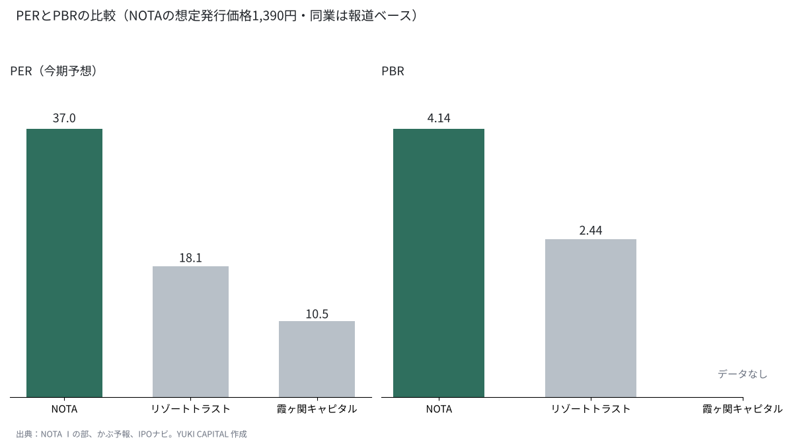
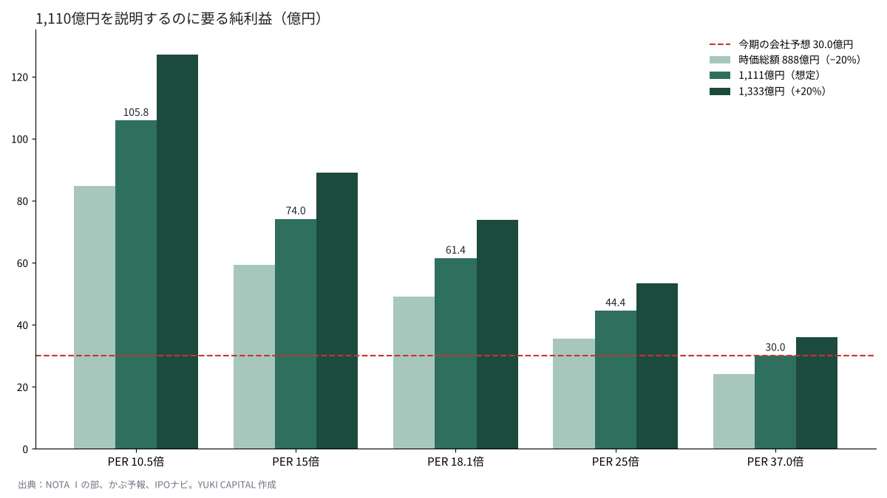

NOTA（旧NOT A HOTEL）の想定時価総額1,110億円は、何を織り込んだ値段なのか
別荘を共同所有で売るNOTA株式会社（2026年10月に旧NOT A HOTELから社名変更）は、2026年11月6日に東京証券取引所から上場の承認を受け、12月9日にグロース市場へ上場する予定である[1][2]。
想定の発行価格1,390円で計算した時価総額は約1,110億円で、直前期の純利益4.57億円の約243倍にあたる[1]。
本稿の問いは、この1,110億円が、どれだけの利益と成長を前提にした値段なのかである。開示資料と同業の倍率から逆算し、前提を動かして確かめる。
- 想定時価総額約1,110億円は、会社が予想する今期の純利益30.0億円の37.0倍で、同業のリゾートトラスト（約18倍）の約2倍の値段である。
- 同業並みの18倍で説明するには純利益が約61億円、15倍なら約74億円要り、今期予想の2.0〜2.5倍の利益を前提にしていることになる。
- 支えになっているのは稼働率79.1%（国内のリゾートホテル平均56.9%）と約370億円の契約済み未計上売上で、弱みは営業キャッシュフローの赤字と、売り出しの約7割が既存株主の売却である点である。

問いと背景
NOTAは2020年4月1日に設立された。創業者の濵渦伸次氏は1983年に宮崎で生まれ、2007年に高専の同級生とEC構築のアラタナを創業し、2015年にスタートトゥデイ（現ZOZO）へ株式交換で売却した[3][4]。ZOZOを2020年3月に退いた翌月にNOT A HOTELを立ち上げ、最初の拠点は栃木の那須と宮崎の青島だった[5]。
事業の中心は、建築家やデザイナーが設計した別荘を、年10泊から360泊までの単位で共同所有として売ることである[1]。持ち主が使わない日はホテルとして貸し出し、持ち主は購入価格の約3%を年間の管理費として払う[1]。代金は契約時に30%、建物の躯体ができた時に40%、竣工時に30%を受け取り、売上は開業や引き渡しの時に計上する[1]。直前期の売上の内訳は、会員権の販売にあたるメンバーシップが115.4億円、運営が19.9億円だった[1]。2026年9月時点で開業済みは10拠点・48物件、累計のオーナーは1,357名と開示されている[1]。
用語を定義しておく。想定時価総額は、想定の発行価格に上場時の発行済み株式数を掛けた値である。PER（株価収益率）は時価総額÷純利益、PSR（株価売上高倍率）は時価総額÷売上高、PBR（株価純資産倍率）は時価総額÷純資産で、いずれも利益や資産の何年分の値段がついているかを表す。客室稼働率は、販売できる客室のうち実際に使われた割合である。
似た事業は国内外にある。米国のPacasoは1棟を1/8から1/2の持分で売り、2021年に評価額15億ドルの資金調達をした[6]。会員制リゾートの国内最大手リゾートトラストは東証プライムに上場し、2026年3月期の売上高は2,630億円、営業利益は292億円だった[7]。米国のMarriott Vacations Worldwideは、2025年度の売上高が50.3億ドル、純損失が3.08億ドルのタイムシェア最大手である[8]。同じく米国の高級別荘クラブInspiratoは、2025年12月に1株4.27ドルでの非公開化に合意しており、この業態が上場市場で常に高く評価されてきたわけではない[15]。
データと方法
数字の起点は、新規上場申請のための有価証券報告書（Ⅰの部）と上場の承認時の開示である[1][2]。想定の発行価格は1,390円、上場時の発行済み株式は79,898,000株で、掛け合わせた想定時価総額は1,110億5,800万円になる[2]。直前期（2026年3月期）の売上高は128.78億円、純利益は4.57億円、純資産は150.48億円だった。会社は今期（2027年3月期）の売上高を325.8億円、純利益を30.0億円と予想している[2]。
比べる相手は、会員制リゾートのリゾートトラストと、不動産の開発と運用を行う霞ヶ関キャピタルの2社にした。報道ベースの予想PERはそれぞれ約18.1倍と約10.5倍で、リゾートトラストのPBRは約2.44倍である[9][10]。稼働率の比較には、観光庁の宿泊旅行統計調査の2025年の速報値を使った[11]。
方法は2段にした。1段目では、想定時価総額を3つの倍率に分解する。2段目では、同業の倍率を当てはめたときに、1,110億円を説明するのに要る純利益を「時価総額÷倍率」で逆算する。そのうえで、発行価格が仮条件で上下に20%動いた場合と、当てはめる倍率を3通りに動かした場合の感度を見る。
結果
| 指標 | NOTA | リゾートトラスト | 霞ヶ関キャピタル |
|---|---|---|---|
| PER（今期予想） | 37.0倍 | 約18.1倍 | 約10.5倍 |
| PER（直前期の実績） | 243.0倍 | — | — |
| PSR（直前期） | 8.62倍 | 約1.4倍 | — |
| PBR（2026年9月末の純資産） | 4.14倍 | 約2.44倍 | — |

今期予想の純利益で見たPERは37.0倍で、リゾートトラストの約2倍だった。直前期の実績で見ると243.0倍まで跳ね上がり、利益がまだ小さい段階での上場であることが分かる。売上高で見たPSRは8.62倍で、会員権の販売が中心の同業と比べて大きく離れている。
一方で、稼働率は強い。NOTAの稼働率79.1%は、観光庁の統計による2025年のリゾートホテルの平均56.9%を22.2ポイント上回り、シティホテルの74.2%も超えている[1][11]。1年に直すと、約289日が埋まっている計算になる。契約は済んでいるがまだ売上になっていない金額も約370.2億円あり、今期の売上予想の大きさの裏付けになっている[1]。
感度分析
| 当てはめる倍率 | 1,110億円を説明する純利益 | 今期予想（30.0億円）に対する倍数 |
|---|---|---|
| PER 37.0倍（現状） | 30.0億円 | 1.00倍 |
| PER 25倍 | 44.4億円 | 1.48倍 |
| PER 18.1倍（リゾートトラスト） | 61.4億円 | 2.05倍 |
| PER 15倍（同業の平均） | 74.0億円 | 2.47倍 |
| PER 10.5倍（霞ヶ関キャピタル） | 105.8億円 | 3.53倍 |

同業並みの18.1倍で1,110億円を説明するには、純利益が約61.4億円要る。今期予想の約2倍である。IPOの解説サイトが示す同業平均の15倍なら約74.0億円、不動産開発の霞ヶ関キャピタル並みの10.5倍なら約105.8億円になる[12]。
発行価格が仮条件で20%上下すると、時価総額は約888億円から約1,333億円まで動く。18.1倍で説明するのに要る純利益は、それぞれ約49.1億円と約73.6億円になる。どの組み合わせでも、今期予想の30.0億円を上回る利益が前提に置かれている。
株主と売り出し
潜在株を含む持株比率では、創業者の濵渦氏が27.45%で最大の株主であり、オープンハウスグループ8.55%、セコイア6.18%、ANRI 5.57%、トヨタ・インベンション・パートナーズ4.47%、SBIホールディングス3.57%が続く[13]。上場までに、シリーズCまでの累計で332億円、2026年8月のシリーズDで165億円を集めてきた[13]。
今回の募集は公募5,080,800株、売り出し12,216,600株、追加の売り出しが最大2,594,600株である[2]。追加分を除くと、株数の約70.6%が既存株主の売却にあたる。会社が受け取る手取りは最大約99億円で、使い道は人件費とマーケティングとされ、物件の開発には充てない[12]。上場前から出資してきたベンチャーキャピタルには、株価が公開価格の1.5倍を超えるとロックアップ（売却の制限）が外れる条件がついたものもある[12]。上場の直後に、売りが出やすい価格帯があるということでもある。
考察
反対の見方もある。NOTAを同業と同じ倍率で測るのは、成長の速さを無視しているという見方である。直前期の売上高128.78億円から、今期予想の325.8億円へは約2.5倍の伸びで、利益も4.57億円から30.0億円へ増える見通しになっている[2]。この伸びが2〜3年続けば、37倍は高すぎない値段になりうる。
ただ、限界も大きい。売上は物件の開業や引き渡しの時にまとめて計上されるため、年ごとの利益は引き渡しの時期で大きく動く[14]。営業キャッシュフローは直前期に25.71億円、今期の中間期に61.25億円の赤字で、有利子負債は2年でほぼ倍の179.63億円になった[14]。監査人も、会員権の売上をどの期に計上するかを重点的に見た項目に挙げている[14]。本稿の倍率は報道ベースの同業の値を使っており、同じ日付で揃えた比較にはなっていない。上場前の10月には、割高ではないと言い切る根拠は見当たらないと書いた個人投資家の分析もあった[16]。
答え合わせの基準は3つある。1つ目は11月20日の仮条件と11月30日の公開価格で、1,390円からどちらへ動くか。2つ目は今期の純利益が30.0億円に届くか。3つ目は、未計上の約370億円が予定どおり売上に変わり、営業キャッシュフローが黒字に戻るかである。
結論
想定時価総額約1,110億円は、今期予想の純利益の37.0倍で、同業の倍率で説明するには今期予想の2.0〜2.5倍の利益が要る値段である。高い稼働率と約370億円の未計上の売上は、その成長の期待を一部裏付けている。一方で、キャッシュフローの赤字と既存株主の売却が中心の構成は、値段を下げる方向の材料として残る。
僕はこう見ている
僕は、この1,110億円を高すぎると見ている。僕から見れば、NOTAはホテルと不動産の会社で、その会社に同業の2倍の倍率がついている。それでも、日本の最高級の富裕層を狙う戦略とデザインの凄さに値段がついていることは理解できる。創業者が3割近くを持ち、オープンハウスが9%弱を持っている株主の顔ぶれにも目がいった。僕の資金は自分で選んだAIの会社に置くと決めているので、上場では買わずに12月9日の値段を見るだけにする。
参考文献
- 日本取引所グループ, 「NOTA株式会社 新規上場申請のための有価証券報告書（Ⅰの部）」, 2026-11-06, https://www.jpx.co.jp/listing/stocks/new/t13vrt000002kfqd-att/12NOTA-1s.pdf
- BRIDGE, 「NOTA（旧NOT A HOTEL）、東証グロース上場が承認」, 2026-11-06, https://thebridge.jp/2026/11/nota-tse-growth-ipo-approved
- 株式会社スタートトゥデイ, 「株式会社アラタナの株式取得（完全子会社化）に関するお知らせ」, 2015-03-25, https://corp.zozo.com/assets_wp/cf/wp-content/uploads/2017/03/Release_ST_Aratana201503251.pdf
- 現代ビジネス, 「アラタナ 濵渦伸次」, 2015, https://gendai.media/articles/-/42920
- BRIDGE, 「NOT A HOTEL、2か月で約40億円を販売」, 2021-11-30, https://thebridge.jp/2021/11/not-a-hotel-sold-4b-yen-in-2-month
- Pacaso, "Pacaso Raises $35M to Expand Luxury Home Co-Ownership", 2025-07-31, https://press.pacaso.com/2025-07-31-Pacaso-Raises-35M-to-Expand-Luxury-Home-Co-Ownership
- リゾートトラスト株式会社, 「2026年3月期 決算短信」, 2026-05-15, https://www2.jpx.co.jp/disc/46810/081220260513530758_tse-acedjpsm-46810-20260515346810-ixbrl.htm
- Marriott Vacations Worldwide, "Fourth Quarter and Full Year 2025 Results", 2026-02, https://ir.marriottvacationsworldwide.com/node/20756
- かぶ予報, 「リゾートトラスト（4681）」, 2026-11-08閲覧, https://kabuyoho.jp/reportTarget?bcode=4681
- かぶ予報, 「霞ヶ関キャピタル（3498）」, 2026-11-08閲覧, https://kabuyoho.jp/reportTarget?bcode=3498
- 観光庁, 「宿泊旅行統計調査 2025年（速報値）」（トラベルボイスによる要約）, 2026-03-02, https://www.travelvoice.jp/20260302-159329
- IPOナビ, 「NOTA（673A）IPO上場の評価」, 2026-11-06, https://ipo-navi.jp/column/nota-not-a-hotel-673a-ipo-listing-report
- BRIDGE, 「NOT A HOTEL、シリーズDで165億円を調達」, 2026-08-06, https://thebridge.jp/2026/08/not-a-hotel-raises-series-d-funding
- note（toworu_note001）, 「NOTAの上場資料を読む」, 2026-11, https://note.com/toworu_note001/n/n285d2e10b827
- BusinessWire, "The Exclusive Collective Launches with Agreement to Acquire Inspirato", 2025-12-16, https://www.businesswire.com/news/home/20251216433405/en/The-Exclusive-Collective-Launches-with-Agreement-to-Acquire-Inspirato-Uniting-Three-Market-Leading-Luxury-Travel-Brands
- note（k19sawada）, 「NOT A HOTELの上場を考える」, 2026-10-14, https://note.com/k19sawada/n/nbc444e3af136
図はYUKI CAPITALが作成。トップ画像：Salman Saqib（Unsplash）
日々の数字と判断は、Xで記録している。